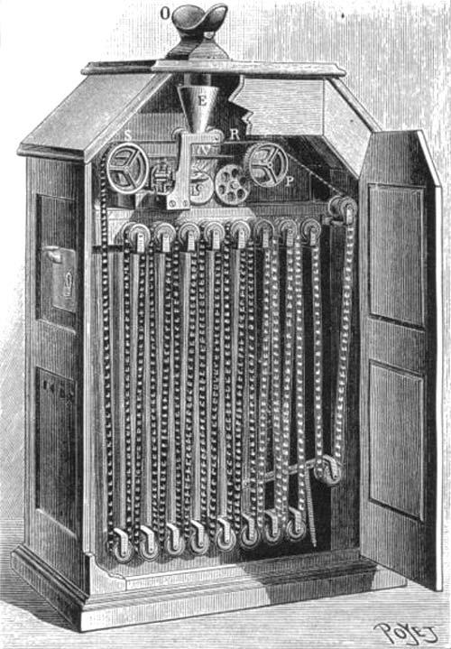

The Kinetoscope
The Kinetoscope is an early motion picture exhibition device. The Kinetoscope was designed for films to be viewed by one individual at a time through a peephole viewer window at the top of the device. The Kinetoscope was not a movie projector, but introduced the basic approach that would become the standard for all cinematic projection before the advent of video, by creating the illusion of movement by conveying a strip of perforated film bearing sequential images over a light source with a high-speed shutter. A process using roll film was first described in a patent application submitted in France and the U.S. by French inventor Louis Le Prince. The concept was also used by U.S. inventor Thomas Edison in 1889, and subsequently developed by his employee William Kennedy Laurie Dickson between 1889 and 1892. Dickson and his team at the Edison lab also devised the Kinetograph, an innovative motion picture camera with rapid intermittent, or stop-and-go, film movement, to photograph movies for in-house experiments and, eventually, commercial Kinetoscope presentations.
A prototype for the Kinetoscope was shown to a convention of the National Federation of Women's Clubs on May 20, 1891. The first public demonstration of the Kinetoscope was held at the Brooklyn Institute of Arts and Sciences on May 9, 1893. Instrumental to the birth of American movie culture, the Kinetoscope also had a major impact in Europe; its influence abroad was magnified by Edison's decision not to seek international patents on the device, facilitating numerous imitations of and improvements on the technology. In 1895, Edison introduced the Kinetophone, which joined the Kinetoscope with a cylinder phonograph. Film projection, which Edison initially disdained as financially nonviable, soon superseded the Kinetoscope's individual exhibition model. Many of the projection systems developed by Edison's firm in later years would use the Kinetoscope name.